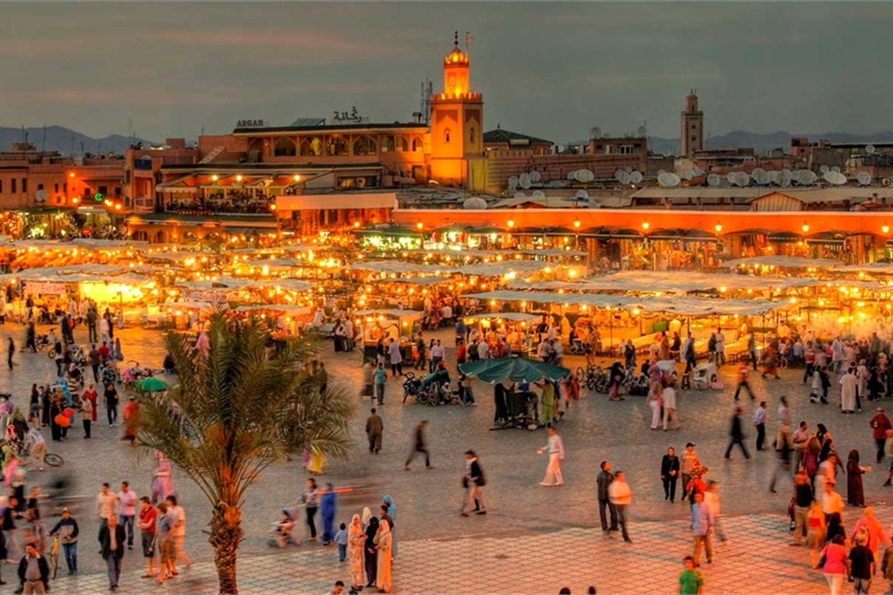
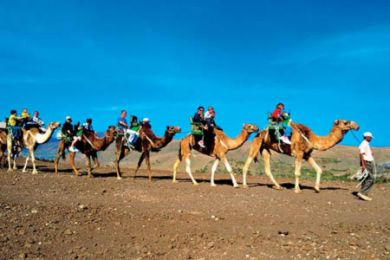
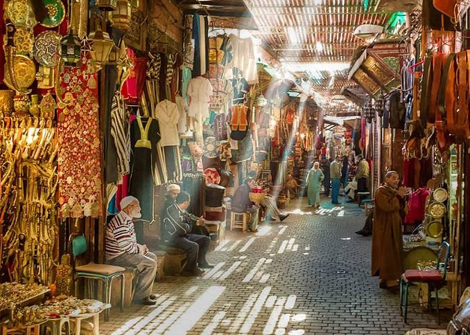
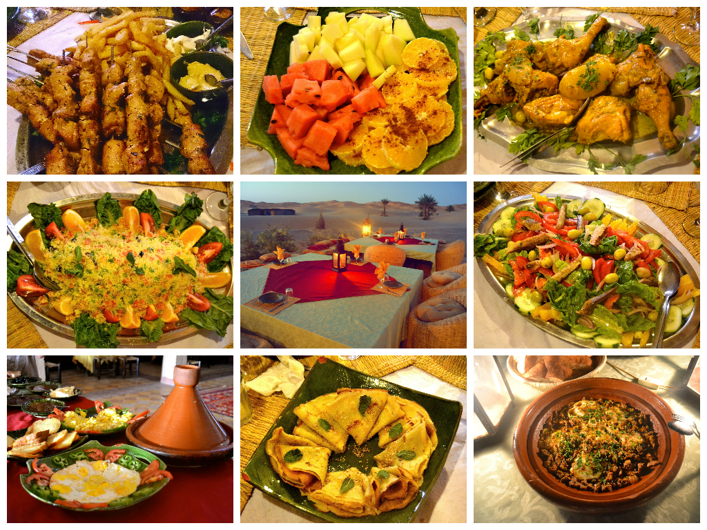

¡SaharaToursGo!
¡SaharaToursGo!
¿POEQUE VISITAR MARRAKECH?
Como otras ciudades imperiales marroquíes, Marrakech está dividida fundamentalmente en dos partes: el centro con la gran Medina o ciudad vieja, rodeada de espectaculares bastiones de tierra roja, y, fuera de las murallas, la ville nouvelle o ciudad nueva, construida por los franceses en los años del dominio colonial y en continua expansión.
De ahí su sobrenombre de "ciudad roja". La Medina de Marrakech está llena de antiguos palacios y mezquitas, que como es costumbre en Marruecos, no están abiertas a los no musulmanes. Su lugar más emblemático es la gran plaza de Jamaa el Fna.
Al oeste de los bastiones de la Medina se extiende la ville nouvelle, con los barrios de Guéliz e Hivernage; la arteria principal es la Avenue Mohammed V, una amplia avenida arbolada que desemboca junto a una de las puertas de la ciudad vieja. En dirección este, finalmente, se encuentra el barrio residencial de la Palmeraie, una zona semidesértica llena de palmeras que en los últimos años se ha llenado de edificios.
MONTAR EN CAMELLO Y DORMIR EN EL DESIERTO
Otra de las actividades que no te puedes perder cuando estás visitando Marruecos, es ir al desierto del Sahara, este majestuoso espacio natural en donde podrás vivir la experiencia de hacer un trayecto en camello y sortear las dunas imaginándote que este era el recorrido que tenían que hacer en la antigüedad para comercializar los elementos principales y para la supervivencia de muchas de las tribus que habitaban África.
En las noches existe la posibilidad de pernoctar en el desierto y tener un avistamiento del cielo estrellado y hacerte la pregunta “¿estamos solos en este universo?”, de ser cierto que estamos solos, qué espacio tan mal aprovechado.
PERDERSE EN LAS MEDINAS
Todas las ciudades en Marruecos tienen una Medina. En la antigüedad las Medinas eran unas fortificaciones donde se desarrollaban las ciudades, el comercio, las viviendas, las madrazas, los hamman y todo aquello que se necesitaría para la vida normal de los marroquíes.
Hoy en día suelen ser la parte antigua de las ciudades y están repletas de laberintos ya que no existía planificación para la construcción. Por lo general todas tienen una plaza grande en el centro donde actualmente se concentra el comercio y puedes encontrar el souvenir ideal para traer un recuerdo inolvidable del viaje a Marruecos.
La Djemaa el-Fna en Marrakech, que referenciamos en el primer punto, es quizá la principal Medina de Marruecos.
GASTRONOMIA MARROQUI
La Djemaa el-Fna en Marrakech, que referenciamos en el primer punto, es quizá la principal Medina de Marruecos.
Para iniciar debes tener presente el proverbio y regla de la cultura marroquí para que no vayas a pasar por grosero “Durante la comida no se habla”.
Actualmente los platos marroquís están muy influenciados internacionalmente por las cocinas Mediterráneas, por la tradición de los bereberes y las tradiciones arábicas. Su plato más típico es el Tajín, un estofado de carne de cordero o pollo servido en un plato de barro que tiene una tapa del mismo material en forma de triángulo, pero que su base es circular para guardar el calor.
Si vas a Marruecos y no pruebas este plato es como si no hubieras estado nunca, cabe recordar que, según la tradición y las ciudades, el Tajín es preparado de muchas formas. Ten presente que el cuscús es un plato originario de los bereberes, es una sémola del trigo que se prepara con vegetales, garbanzos y carnes rojas y ha sido uno de los platos tradicionales que ha viajado por el Mediterráneo y por el mundo con sus variaciones y sin duda es otro de los obligados a probar cuando se viaja a Marruecos.
